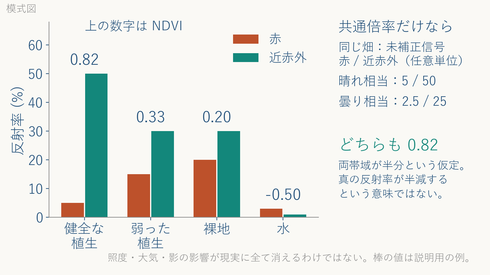

「農業とテクノロジー」（農業分野におけるリモートセンシング技術）講師用解説
一本の筋と、教えるときに意識すること
本編 57 枚＋付録 3 枚（2026 年度版、90 分）を一本の線として語るための文書。各枚の要約ではなく、なぜその順で並んでいるか、節のあいだで何を言うか、どこで学生がつまずくか、時間が押したら何を削るかを書く。
0. 要旨（一文で言う）
90 分のあいだ何度も口にする言葉は三つ。写真ではなく数値（反射率）、波長、反射と放射。後半（道標 E）ではこれに衛星＋実測を足す。個々の衛星名・年号・事例はすべてこの四語に帰着させて話す。衛星名を覚えさせる回ではない。
3 枚目（0-2）に書いた一本の筋「光は波 → 見えない波長がある → 反射と放射 → 葉の反射 → NDVI → 衛星で測る → 畑の判断」が地図である。迷子になったら 3 枚目に戻る、と最初に宣言し、道標の枚（4・12・16・30・41 枚目）に来るたびに「いま地図のここ」と指す。
1. 思想：農学にとってリモートセンシングとは何か
1.1 測るのは「どの状態か」
2 枚目の四本柱は、四つの技術を「生物が生息している環境の情報を得る技術」という一つの定義で束ねている。この定義の中で役割を分けると、GNSS は「どこに」、GIS は「何がどう重なっているか」、リモートセンシングは「どの状態か」を受け持つ。道標 A が 8 枚もあるのは、この分担を先に見せておくと、後半の可変施肥（43 枚目）で「衛星の生育マップ」と「GNSS 付きの散布機」が 1 台の機械で合流する場面が、積み上げの結果として見えるからである。
農学にとってのリモートセンシングは、現地に行く代わりではない。十勝の一戸の経営は数十 ha から百 ha を超え、小麦の追肥の適期は数日しかない。全部の畑を歩いて茎数を数えることは物理的にできない。だからリモートセンシングは「見きれない広さを、同じ日に、同じ物差しで、数で見る」技術として農学に入ってくる。この立場を取ると、道標 E の事例はどれも「人が全部歩かなくて済む価値」と「それでも少数は歩く必要」の両方を語ることになり、51 枚目の限界が話の外側ではなく内側に入る。
1.2 写真ではなく数値
この回でいちばん力を入れて崩すのは「衛星画像＝上から撮った写真」という素朴な像である。14 枚目（2-2）で「人の目も天然のリモートセンサで、画素は 0〜255 の測定値」と言い、27 枚目（3-11）で「1 画素はバンドごとの反射率の組（赤 5%、近赤外 50%）」と具体化し、54 枚目（6-2）の確認問題でもう一度問う。三か所で同じことを言うのは意図的で、ここが崩れないと NDVI は「色を変換したきれいな絵」にしか見えない。
「反射率」と「明るさ」の区別も同じ筋にある。24 枚目（3-8）の「反射率＝反射÷入射は物の性質、明るさは照明の都合」が、28 枚目（3-12）の「なぜ和で割るか」の答えになり、51 枚目（5-10）の「明るさ≠反射率、分母だけでは消えない」で限界側からもう一度戻ってくる。衛星は分光計であって、カメラではない。
1.3 葉が見えるのは色素と構造の都合
NDVI が働く理由は葉の側にある。25 枚目（3-9）の断面図で、赤が暗いのは柵状組織のクロロフィルが吸うから、近赤外が明るいのは海綿状組織の細胞と空気の境界で散乱して 40〜50% が戻ってくるからと分けて言う。二つの理由が別の場所にあるから、「赤が低く近赤外が高い」という組み合わせが植生にしか起きず、差が緑の量の指標になる。
この分け方は、三つの誤解をまとめて潰す。「赤外線＝熱」（19 枚目で潰す。葉が返す近赤外は太陽光の反射で、温度と無関係）、「クロロフィルが近赤外を反射する」（25 枚目。返しているのは構造）、「NDVI が高ければ健康」（28・49 枚目。NDVI は緑の量で、葉面積指数 3〜4 で頭打ちになる）。三つとも「何が・どの波長を・どういう仕組みで返すか」を言えれば自分で否定できる。
1.4 全体を貫く対比
各節の内容も、確認問題の誤文も、次の対比のどれかに帰着する（第 5 節の表はこの対比で誤文を分類している）。
| 対比 | 片方 | もう片方 | 効いてくる枚 |
|---|---|---|---|
| 写真／数値 | 色のついた絵、人の目と同じ 3 色 | 波長ごとの反射率の表、見えない波長も入る | 13・14・27・54 |
| 反射／放射 | 太陽光が物に当たって返る（約 3 µm より短い側） | 物自身が温度に応じて出す（長い側、地表は 10 µm） | 19〜22・37 |
| 色素／構造 | クロロフィルが青と赤を吸う | 海綿状組織の境界が近赤外を散乱させる | 25・26・29 |
| 明るさ／反射率 | 照明と時刻と天候で変わる信号 | 物の性質。和で割れば明るさの倍率が消える | 24・28・51 |
| 受動／能動 | 太陽光を待つ光学センサ、雲に負ける | 自分で電波を出す SAR、雲と夜を越えるが測る量が違う | 36・47・51 |
| 衛星だけ／衛星＋実測 | 衛星があれば現地に行かなくてよい | 数筆の実測で校正し、実測は衛星の「正解」にもなる | 40・42・51 |
| 見る／計算する | 画像を眺める、地図を眺める | 層を重ねて計算し、筆ポリゴンで畑ごとに切り出す | 9・10・43 |
対象（地表・大気・葉・畑）の性質から、生じる問題と、それに答える節をたどると次のようになる。節の順序の理由はこの表で言える。
| 対象の性質 | 生じる問題 | 答える節（枚） |
|---|---|---|
| 地表は太陽光を反射し、同時に自分でも放射している | センサには二つの信号が混ざって届く。どちらを見ているか分けないと NDVI も地表温度も語れない | 段 4〜6（20〜22）、4-7（37） |
| 大気は波長を選んで通す。雲は可視〜熱赤外を遮る | バンドは「窓」の中にしか置けない。晴れ待ちが要る | 段 7（23）、4-6（36）、5-10（51） |
| 葉は色素と空隙構造を持つ | 赤と近赤外で反射率が極端に違う。これが植生の指紋 | 段 8〜10（24〜26） |
| 明るさは時刻・天候で変わるが、反射率は変わらない | 差だけでは比べられない。和で割って比にする | 段 8・12（24・28） |
| 畑は広く、作期の適期は短い | 広く・繰り返し・同じ物差しで測る道具が要る | 2-3（15）、4-1・4-2（31・32）、4-4（34） |
| 衛星は茎数も窒素吸収量も直接は測らない | 少数の実測で校正し、実測を「正解」にして衛星に広げる | 4-10（40）、5-1（42）、5-10（51） |
| 判断は畑ごと、機械は位置つきで動く | GNSS の「どこ」と衛星の「どの状態」を 1 台で合流させる | 1-4（8）、5-2（43） |
2. 一本の筋
2.1 授業中ずっと見せる地図
3 枚目に書いた筋を 7 段の梯子にしたもの。土台（道標 A・B）の上に梯子（道標 C）が立ち、上りきった先に道具（道標 D）と畑（道標 E）がある。板書するなら左に 7 語を縦に書き、節が変わるたびに印を動かす。

2.2 節ごとの役割と、学生に残す一文
| 節（枚） | 地図の段 | 物語での役割 | 学生に残す一文 |
|---|---|---|---|
| 導入（1〜3） | 地図そのもの | 四本柱の中での RS の位置と、ゴール 3 つ、一本の筋を先に見せる | 「衛星が持ち帰るのは写真ではなく、数か所の波長の反射率の数値」 |
| 道標 A（4〜11） | 土台 | GNSS＝どこ、GIS＝重ねて計算、の 2 つを置き、「どの状態か」の席を空けておく。可変施肥（43）の伏線 | 「GNSS は『どこで』、どの状態かは今日の RS」 |
| 道標 B（12〜15） | 土台 → 梯子の入口 | 定義・目も同じ・画素は数値・なぜ衛星か。「近赤外って何？」を問いとして立てる | 「人には見えないものを、見きれない広さで」 |
| 道標 C 段 1〜3（16〜19） | ①② | 光は波、見えない波長、赤外線≠熱。NDVI の筋に要る語（波長・近赤外）だけを置く | 「全部同じ波。違いは波長だけ」 |
| 道標 C 段 4〜7（20〜23） | ③ | 反射と放射を分け、約 3 µm で線を引き、大気の窓でバンドの置き場を決める | 「約 3 µm より短い側は反射、長い側は放射」 |
| 道標 C 段 8〜12（24〜28） | ④⑤ | 反射率は物の性質 → 葉の仕組み → 指紋 → バンド → NDVI。梯子の上りきり | 「赤を吸い、近赤外を返す。差を和で割る」 |
| 確認問題（29） | ①〜⑤の点検 | 3 つの誤解（赤外線＝熱、衛星＝写真、クロロフィルが近赤外を反射）を隣と相談して潰す | 「何が・どの波長を・どの仕組みで返すか、で答えられる」 |
| 道標 D（30〜40） | ⑥ | 測る道具の 2026 年の現況。分解能のトレードオフを軸に、無料・商用・SAR・熱赤外・ハイパー・蛍光・無料ツール・使い分け | 「細かさと広さと頻度は費用の問題。無料は永続ではない」 |
| 道標 E（41〜52） | ⑦ | 十勝 → 日本 → 世界 → AI。追肥・可変施肥・収穫順を「衛星＋実測」で語り、限界と時系列で閉じる | 「衛星と少数の実測を組にする。衛星があれば現地に行かなくてよい、ではない」 |
| まとめ（53〜57） | 地図に戻る | 6 行のまとめは 3 枚目と対応。確認問題 3 問で「画素＝数値」「和で割る」「SAR」を点検。次回 AI へ | 「NDVI は緑の量。健康そのものではない」 |
| 付録（58〜60） | ③の補足 | c＝λf、E＝hf、σT⁴、2898/T、プランク式、太陽光スペクトル。授業では開かず、質問が出たら戻る | — |
2.3 節の橋渡し
導入 → 道標 A：「今日のゴールは 3 つ。全部、最後の確認問題に出ます。迷子になったらこの 3 枚目に戻ってください。まず、衛星の話に入る前に、『どこで』を決める道具を 10 分で済ませます。後で畑の機械が動く場面で、ここが効きます。」
道標 A → 道標 B：「GNSS は『どこにいるか』、GIS は『層を重ねて計算する』。残っているのは『そこがどんな状態か』。それを離れた所から測るのがリモートセンシングで、ここからが本題です。衛星画像も GIS の層のひとつ、ということだけ持って次に行きます。」
道標 B → 道標 C：「衛星は写真を撮っているのではなく、波長ごとの反射率を数値で持ち帰っている。そのとき『人には見えない近赤外』を使う、と言いました。では近赤外とは何か。ここから 15 分、12 段の梯子を一段ずつ上ります。式は最後の 1 本だけです。」
段 3 → 段 4：「ここまでで、光は波で、見えない波長があり、赤外線は熱そのものではない、と分かりました。次は、センサに届く光がどこから来るか。昼の畑には太陽光の反射と、畑自身が出す放射の両方が届いています。この 2 つを分けるのが次の 4 段です。」
段 7 → 段 8：「反射と放射を約 3 µm で分け、大気の窓の中にしかバンドを置けない、と分かりました。ここからは反射の側だけを見ます。太陽光が葉に当たったとき、何がどう返ってくるか。NDVI の理由はここにあります。」
段 10 → 段 11：「植生・土・水で反射の曲線が違う、ここまでが物の側。次は測る側。衛星はこの曲線を連続では測れず、十数か所の帯（バンド）で拾います。2-2 で言った『画素は数値』が、ここで『バンドごとの反射率の組』として具体になります。」
段 12 → 確認問題 → 道標 D：「梯子を上りきりました。隣と 1 分相談して 4 問。……では、この反射率を測る道具が 2026 年にどうなっているか。衛星名を覚える必要はありません。『細かさ・広さ・頻度・費用』の 4 つで見てください。」
道標 D → 道標 E：「道具はそろいました。ここからは十勝の畑に降ります。追肥、可変施肥、収穫順。どの事例でも『衛星だけ』ではなく『衛星＋少数の実測』で動いていることに注目してください。最後に限界を 1 枚で言います。」
道標 E → まとめ：「3 枚目のゴール 3 つに戻ります。写真ではなく数値、赤を吸い近赤外を返す、差を和で割る、畑で判断する。確認問題 3 問、全部 3 枚目で答えられます。次回はこの数値を AI に入れます。」
3. 背景
スライドには書いていないが、講師が持っていると話が太くなるもの。授業で全部言う必要はなく、質問が出たときと、付録（58〜60 枚目）に戻るときの手持ちにする。
3.1 数学
- 正規化差分の不変性。NDVI＝(ρNIR−ρR)/(ρNIR+ρR)。両方の反射率が同じ倍率 k で変わると、分子も分母も k 倍になり値は変わらない。28 枚目の「明るさが半分でも同じ比率なら不変」はこのことで、照明の強さ・太陽高度・薄い大気の影響のうち「波長によらず同じ倍率」の部分だけが消える。波長ごとに倍率が違う影響（大気の散乱は青ほど強い）は消えないから、大気補正した地表反射率を入れる、と 28・51 枚目で言う。
- 範囲が −1〜1 に収まる理由。反射率はどちらも 0 以上だから、差の絶対値は和を超えない。水で負になるのは赤の反射率が近赤外より大きいから（28 枚目の例：赤 0.03、近赤外 0.01 で −0.50）。
- 例の数値。植生 赤 0.05／近赤外 0.50 → 0.82。弱い植生 0.15／0.30 → 0.33。裸地 0.20／0.30 → 0.20。これを 1 回、黒板で割り算して見せると「和で割る」が式ではなく操作として残る。
- 頭打ちの形。葉面積指数（LAI）が増えると赤の反射率は早く 0 近くに張り付き、近赤外だけが増え続けるが、比にすると 1 に漸近する。LAI 3〜4 で傾きがほぼ 0 になる（49 枚目の図）。NDRE は赤の代わりに 705 nm 付近のレッドエッジを使い、吸収が飽和しにくいので高い葉量でも傾きが残る。
- ビット深度。8 bit は 256 階調、12 bit は 4096 階調（31 枚目）。衛星の生データ（DN）は整数で、反射率は 0〜1 の実数。DN を NDVI の式に入れると値が狂う、と 28 枚目のノートにある。
- 決定係数 R²。37・38・42 枚目の R²＝0.92、0.89 や誤差 2.8 kg N/10a は、衛星の値と実測の回帰の当てはまり。「衛星が窒素を測った」のではなく「衛星の値から窒素を推定する式を、実測で作った」と言い換えると、51 枚目の「地上データが要る」につながる。
3.2 物理
- プランクの放射（付録 B、59 枚目）。温度 T の黒体が波長 λ で出す放射の強さを与える式。授業では「熱いほど強く（面積）、短い波長で（山が左へ）」の 2 つの結論だけ使う（21 枚目）。全放射が T の 4 乗に比例するのがシュテファン＝ボルツマン、山の位置が 2898/T µm になるのがウィーンの変位則で、どちらもプランクの式から出る。3000／4000／5000／6000 K で山は 0.97／0.72／0.58／0.48 µm。
- 黒体の定義。当たった放射を全部吸収する理想の物体で、「黒く見える物」ではない。太陽も人の体も近似的に黒体として扱える。実物は放射率（0〜1）を掛けて補正する。
- 太陽と地表の 2 つの山（22 枚目）。太陽の表面は約 5772 K で山は 0.50 µm、地表は約 288 K で山は 10.1 µm。図は山の高さをそろえて描いてあるので、交点に物理的な意味はない。実際の放射の強さは太陽のほうが桁違いに大きいが、距離の 2 乗で薄まるので、地表で受ける太陽光は約 1361 W/m²（付録 C、60 枚目）。3〜5 µm は昼間なら反射と放射が同じ桁で混ざる。
- 大気の窓（23 枚目）。水蒸気が 1.4・1.9・2.7・6 µm 付近、二酸化炭素が 2.7・4.3・15 µm 付近、オゾンが 9.6 µm 付近と紫外を吸う。残った「透明な帯」が可視〜近赤外、1.6、2.2、3〜5、8〜14 µm。分子名は授業で言わない。
- 分光反射。葉の 0.7 µm 付近の急な立ち上がりがレッドエッジ。クロロフィルの吸収が 0.68 µm で終わり、そこから先は内部散乱が支配するため。1.45・1.95 µm の谷は葉の水の吸収で、乾くと浅くなる。土の曲線が長波長ほど明るいのは、乾いた鉱物の性質と有機物の少なさによる。水はほぼ全波長で暗く、近赤外では吸収され 0 に近い。
- SAR（36 枚目）。自分でマイクロ波を出し、戻る強さ（後方散乱）を測る能動センサ。C バンドは波長約 5.6 cm、L バンドは約 24 cm で、長いほど植生を透過して幹や地面に届く。平らな水面は鏡面反射で電波が衛星に戻らず暗く写るので、湛水と浸水が見分けられる（47 枚目）。斜めに照らすため地形の倒れ込みやスペックル（ざらつき）があり、光学画像とは別の読み方が要る。
3.3 歴史
年号は暗記させない。「無料で半世紀分の過去が見られる」「毎日撮れるようになったのはここ 10 年」の 2 点が伝われば足りる。
| 年 | 出来事 | 授業での使い方 |
|---|---|---|
| 1800 年 | 赤外線の発見（分光した太陽光の赤の外側に温度計を置いた実験） | 18 枚目。「見えない光」が温度計で見つかった話。赤外線＝熱の誤解の出どころでもある |
| 1900 年 | プランクの放射式 | 21 枚目・付録 B。結論 2 つだけ使う |
| 1957 年 | 最初の人工衛星 | 触れなくてよい |
| 1972 年 | Landsat 1 打上げ（地球観測の連続記録の始まり） | 33・34 枚目。「半世紀無料」の起点 |
| 1970 年代半ば | NDVI が提案される（Landsat の初期データで植生を強調する比として） | 28 枚目。「衛星の最初のデータから出てきた指数」 |
| 1990 年代 | GPS の完全運用、2000 年に民生用の精度制限が解除 | 5・6 枚目。数 m の精度が民生で使える起点 |
| 2008 年 | Landsat の全アーカイブが無料公開 | 34・39 枚目。「無料」は制度の判断で始まった |
| 2010 年 | みちびき初号機 | 7 枚目 |
| 2013 年 | 士幌町の RTK 無料配信 | 8 枚目。十勝で自動操舵が広がる土台 |
| 2014〜2015 年 | Sentinel-1A（SAR）・Sentinel-2A（光学） | 34・36 枚目。無料・10 m・5 日の起点 |
| 2017 年ごろ | PlanetScope が毎日観測に到達 | 35 枚目。「毎日撮れると何が変わるか」 |
| 2021 年 | Landsat 9 | 33 枚目 |
| 2022 年 | EnMAP（ハイパースペクトル）、高校で地理総合が必履修 | 37・11 枚目 |
| 2024 年 | ALOS-4、Sentinel-2C、Sentinel-1C。農地の現地確認を衛星で代替する要綱改正 | 33・36・46 枚目 |
| 2025 年 | NISAR（L バンド SAR）、Sentinel-1D、PlanetScope 36 機追加 | 33・35・36 枚目 |
| 2026 年 | FLEX（蛍光）、みちびき 7 号機、Sentinel-1A 運用終了、GEE の制度変更 | 38・7・36・39 枚目。「2026 年の現況」として語る |
3.4 制度
- 無料データは「制度」で無料になっている。Landsat は 2008 年の方針転換、Copernicus（Sentinel）は登録のみで無料、Google Earth Engine は非商用の無料枠が 2026 年 4 月に変わった（39 枚目）。G-Portal の ALOS 無償配布は 2025 年 10 月に停止して 2026 年 3 月に再開した。「無料＝永続ではない」は技術の話ではなく制度の話として言う。
- 筆ポリゴン（10 枚目）。農林水産省が公開する農地 1 筆ごとの区画データで、令和 8 年度版は 2026 年 5 月、登録不要。衛星画像を筆ポリゴンで切り出すと「畑ごとの NDVI」になる。行政の現地確認代替（46 枚目）も、この区画が基盤。
- 現地確認の衛星代替（46 枚目）。2024 年度の要綱改正で、交付金の現地確認を衛星画像で代替できるようになり、作業量を 8 割程度減らした自治体がある。耕作放棄地の AI 判読も 100 を超える市町村で使われている。進路の話として、行政職でも衛星画像を読む場面があると言える。
- J-クレジット（47 枚目）。水田の中干しを延長してメタン排出を減らす方法論が 2023 年 4 月に登録された。落水したかどうかを SAR で確かめる需要がここから出る。減収は 3% 程度とされる。
- みちびき（7 枚目）。2026 年 10 月時点で運用 5 基、7 機体制は 2031 年度見込みと報道されている。5 号機は 2025 年 12 月の打上げ失敗で失われ、7 号機は 2026 年 8 月に成功した。数字は授業当日に確認してから言う。
- 商用衛星の無料枠（35 枚目）。教育・研究向けの無料枠は年ごとに変わる。「十勝農試は PlanetScope と Sentinel-2 の両方を使っている」までは言ってよいが、料金は言わない。
3.5 専攻への接続
- 地域環境計画学の中で。2 年後期のこの回は、測量・GIS を学んだ後、AI（次回）に入る前に置かれている。GNSS の距離の交会（6 枚目）は測量の三辺測量と同じ考えで、GIS の層（9 枚目）は実習で触る QGIS そのもの。「今日は数値の作り方、次回はその数値の使い方」と言うと 2 回がつながる。
- 作物学・土壌肥料学へ。42 枚目の「起生期の茎数で追肥を決める」「止葉期の窒素吸収量」は、小麦の生育診断の言葉。NDRE が窒素に効くのは、クロロフィル量が窒素と相関するから。衛星の値は農学の指標に翻訳して初めて使える、と言える。
- 水文・気象へ。37 枚目の熱赤外 → 地表温度 → 蒸発散は、水収支の話。葉温が気温より低いのは蒸散で冷えているからで、水ストレスがかかると葉温が上がる。
- 情報科学へ。14 枚目の「画像＝数値の表」と 50 枚目の基盤モデルは、次回の AI の入力。画素ごとの 13 個の反射率と、時系列の山の形（52 枚目）が特徴量になる。
- 卒業研究で。Copernicus Browser で自分の実家や実習圃場の NDVI を 1 枚出す、という課題が 55 枚目の Moodle 小テストの先に置ける。Sentinel-2 の 10 m と筆ポリゴンがあれば、無料で 1 筆ごとの時系列が作れる。
4. 節ごとの教え方
各節に、位置づけ・肝となる枚・そのまま口にできる台詞・つまずき・飛ばせる枚を書く。時間は notes/改1_構成案.md の配分（導入 3 分、A 10 分、B 5 分、C 20 分、D 18 分、E 22 分、まとめ 7 分、計 85 分）に合わせる。
4.1 導入（1〜3 枚目、3 分）
位置づけ：地図を先に渡す。2 枚目で四本柱の中の席を決め、3 枚目でゴール 3 つと一本の筋を見せる。ここで「写真ではなく数値」を最初に口にする。
肝となる枚：3 枚目（0-2）。筋の 7 語を読み上げ、「この 7 語が今日の全部」と言う。
- 「四つの技術は全部『生物が生息している環境の情報を得る技術』です。GNSS が『どこに』、GIS が『何がどう重なっているか』、今日のリモートセンシングは『どの状態か』。環境 DNA は『何がいるか』。」
- 「ゴールは 3 つで、全部最後の確認問題に出ます。1 つ目がいちばん大事で、衛星が持ち帰るのは写真ではなく、数か所の波長で測った反射率の数値です。これが崩れると後の全部が崩れます。」
- 「迷子になったらこの 3 枚目に戻ってください。私も道標のたびにここに戻ります。」
- ゴール 3 つを読み上げるだけで終わる — 「反射率」「近赤外」「NDVI」の 3 語はまだ説明していない。「意味はこれから。今は『写真ではない』だけ覚えて」と言って、未定義のまま進む不安を先に消す。
- 四本柱の 4 つ目（環境 DNA）に時間を使う — 2 枚目は席を決めるだけ。1 文で済ませる。
飛ばせる枚：なし（3 枚で 3 分）。
4.2 道標 A GNSS と GIS（4〜11 枚目、10 分）
位置づけ：土台。主役（RS）はまだ出てこないので、「10 分で済ませる。後で畑の機械で効く」と宣言して走る。8 枚目の「GNSS は『どこで』、『どの状態か』が RS」と 10 枚目の「筆ポリゴンで切り出すと畑ごとの NDVI」が、後半への伏線。
肝となる枚：6 枚目（1-2、距離の交会）と 8 枚目（1-4、自動操舵）。6 枚目は「測っているのは時間だけ」と言えるかどうか、8 枚目は「どこで」と「どの状態か」を分けて言えるかどうか。
- 「GPS は固有名詞、GNSS が総称です。表の 4 つは全部同じ仕組みで、受信機が測っているのは電波の到達時間だけ。1 マイクロ秒で 300 m。3 つの球の交点が位置で、受信機の時計が安いから 4 機目が要ります。」
- 「三角測量ではなく距離の交会です。角は測っていません。」
- 「十勝で自動操舵が 3,000 台を超えました。これは『どこで』を cm で決める話。畑が『どの状態か』は分からない。そこを埋めるのが今日の衛星で、後で 1 台の機械の中で合流します。」
- 「GIS は地図を『見る』道具ではなく、層を重ねて『計算する』道具です。衛星画像もその層のひとつ。農地 1 筆ごとの区画（筆ポリゴン）で切り出せば、畑ごとの値が出ます。」
- 「GPS で三角測量」 — 6 枚目のノートどおり、三辺測量（距離の交会）と言い直す。角は出てこない。
- みちびきの機数と年号で止まる — 7 枚目は「cm 精度の補強信号が日本の上にある」の 1 点でよい。機数は報道で変わる。
- 学生が GIS を「地図アプリ」と思っている — 9 枚目で「層」と「計算」の 2 語に絞る。10 枚目の例はどれか 1 つ（筆ポリゴン）で足りる。
飛ばせる枚：11 枚目（1-7 高校地理総合）。削る順位 3 位。7 枚目の機数の表も口頭で 1 文にできる。
4.3 道標 B リモートセンシングとは（12〜15 枚目、5 分）
位置づけ：梯子の入口。定義（13）で「反射」と「放射」の 2 語を初めて出し、14 枚目で「画素＝数値」、15 枚目で「なぜ衛星か」の 3 点を置く。15 枚目で「近赤外って何？」を問いとして立て、答えずに道標 C に入る。
肝となる枚：14 枚目（2-2、目は天然のリモートセンサ）。「写真ではなく数値」がここで初めて根拠を持つ。
- 「離れた所から、電磁波で、物の性質を測る。これが定義です。『写真を撮る』のではなく『反射率を測る』と考えると、この先が全部つながります。」
- 「皆さんの目も天然のリモートセンサです。スマホの写真を拡大すると画素になり、画素は 0〜255 の数値です。衛星画像は、10 m 角ごとに、光の強さを波長ごとに記録した数値の表です。」
- 「目と衛星の違いは 2 つだけ。見えない波長を測ること、地球全体を繰り返し測ること。十勝平野が 1 枚に収まり、5 日ごとに戻ってくる。『人には見えないものを、見きれない広さで』。」
- 「ところで、『見えない波長』『近赤外』と言いましたが、それが何かはまだ言っていません。ここから 15 分でそれを答えます。」
- 「反射」と「放射」を同じものとして聞き流す — 13 枚目で「反射は太陽光が返るもの、放射は物自身が出すもの。違いは段 4 で」と予告だけする。
- 「画素＝数値」が当たり前すぎて引っかからない — 「では、この数値は何の数値か」と問い、「光の強さ」「波長ごと」の 2 語を引き出す。27 枚目で「赤 5%、近赤外 50%」として戻ってくる。
飛ばせる枚：なし。15 枚目の数値（290 km、5 日、毎日）は 1 文にまとめられる。
4.4 道標 C 段 1〜3 光は波・見えない波長（16〜19 枚目、約 5 分）
位置づけ：梯子の ①②。NDVI の筋に要る語（波長、近赤外、赤外線≠熱）だけを置く。16 枚目の道標で「12 段、15 分、式は最後の 1 本」と言い、各段は説明 40 秒＋図 10 秒＋口頭確認 10 秒で回す。
肝となる枚：18 枚目（3-2、電磁波のスペクトル）と 19 枚目（3-3、赤外線≠熱）。18 枚目は「全部同じ波、違いは波長だけ」が言えるか、19 枚目は 25 枚目を「葉が熱い」と誤読させないための保険。
- 「光は波です。水面の波と同じで、山から山までが波長。違うのは、媒体が要らないこと。真空を秒速 30 万 km で進み、この速さは波長によりません。波長が短いほど周波数が高い。」
- 「目に見えるのは 0.4〜0.7 µm だけ。短い側に紫外線・X 線、長い側に赤外線・マイクロ波・電波。全部同じ波で、違いは波長だけ。リモートセンシングが使うのは 0.4〜14 µm とマイクロ波です。」
- 「リモコンの先は近赤外を出しています。スマホのカメラで見ると光って見えますが、画面の白や紫は赤外線の色ではなく、カメラが勝手につけた色です。」
- 「赤外線は熱ではありません。温かい物がよく出す光、というだけです。葉が返す近赤外は太陽光の反射で、葉の温度とは関係ありません。これを今言っておかないと、後で葉の図を『葉が熱い』と読んでしまいます。」
- 「色＝波長」 — 17 枚目のノートどおり、色は感覚で、混色で同じ色に見える別の波長の組がある。「波長で区別する」とだけ言い、「色」で代用しない。
- 「短い波長ほど強い光」 — E＝hf は 1 個の光子のエネルギーの話で、光の強さ（個数）とは別。19 枚目では「向きだけ」。紫外で日焼けするのは 1 個あたりが大きいから。
- 「電波＝音」「赤外線は見える」 — 18 枚目のノートの潰す誤解 3 つ。口頭確認「リモコンの近赤外は電磁波か音波か」で電磁波と答えさせる。
- 段 1 の水面波のたとえを波の性質全般に広げる — たとえは波長のためだけ。媒体が要らない点で水面波と違う、と言って切る。
飛ばせる枚：なし。削るなら 18 枚目のリモコン実演を言葉だけにする（20 秒）。
4.5 道標 C 段 4〜7 反射と放射・大気の窓（20〜23 枚目、約 6 分）
位置づけ：梯子の ③。センサに届く光が「太陽光の反射」と「物自身の放射」の 2 つであることを分け、約 3 µm で線を引き、大気の窓でバンドの置き場所を決める。段 5（21 枚目）は 3 法則を「熱いほど強く・短い波長で」の 2 つの結論に畳んである。
肝となる枚：20 枚目（3-4、昼は反射・夜も放射）と 22 枚目（3-6、太陽と地表の 2 つの山）。22 枚目の「約 3 µm より短い側は反射、長い側は放射」が、37 枚目の熱赤外と 51 枚目の限界まで使う線。
- 「夜、照明を消したら普通の写真は撮れません。でもサーモグラフィでは人が写る。焚き火の明るさと、焚き火から離れていても感じる熱。昼の畑には太陽光の反射と畑自身の放射の両方が届いています。」
- 「熱いほど強く、短い波長で。これだけです。式は付録に置きました。太陽は 5800 K で 0.5 µm に山、地表は 290 K で 10 µm に山。約 3 µm より短い側は反射を、長い側は放射を見ている。NDVI は短い側、地表面温度や蒸発散は長い側。」
- 「もし目が 10 µm を感じられたら、夜でも畑が見えます。」
- 「大気は波長ごとのフィルターです。通る帯が可視〜近赤外、1.6、2.2、3〜5、8〜14 µm。衛星のバンドはこの窓の中にしか置けません。分子の名前は覚えなくてよい。マイクロ波は雲も通ります。これが後の SAR です。」
- 反射と放射の混同、近赤外と熱赤外の混同 — 20 枚目のノートの 2 つ。挙手で「常温の畑を太陽なしで放射から見るのは可視・近赤外・熱赤外のどれか」を聞き、熱赤外に手が挙がるまで待つ。
- 「熱い物だけが放射する」 — 常温の物も 10 µm で放射している。サーモグラフィが人を写すのはそれ。
- 22 枚目の交点に意味を読む — 2 曲線は山の高さをそろえてある。「交点から反射と放射が等しい波長が分かる」は×。規格化してあると一言添える。
- 炎の色を温度計にする — 21 枚目のノート。炎の色は化学発光が混ざる。黒体の話は太陽と地表に限る。
- 「8〜14 µm は窓だから厚い雲の下も見える」 — 窓は大気の分子の話で、雲（水滴）は可視〜熱赤外を全部遮る。だから晴れ待ちが要り、51 枚目で回収する。
飛ばせる枚：21 枚目（段 5、プランク曲線）を付録扱いにし、22 枚目の冒頭で「熱いほど強く・短い波長で」の 1 文を言う（削る順位 4 位の ⑤）。
4.6 道標 C 段 8〜12 葉の反射から NDVI へ、確認問題（24〜29 枚目、約 9 分）
位置づけ：梯子の ④⑤。反射率が物の性質であること（24）→ 葉の仕組み（25）→ 指紋（26）→ バンド（27）→ NDVI（28）の順に、式を最後に置く。29 枚目で 3 つの誤解を隣と相談して潰し、道標 D へ渡す。
肝となる枚：25 枚目（3-9、葉の断面）と 28 枚目（3-12、NDVI）。25 枚目は「色素が吸う」と「構造が返す」を別の場所で言えるか、28 枚目は「なぜ和で割るか」を明るさの話で言えるか。
- 「光が物に当たると、反射・吸収・透過の 3 つに分かれて、足すと 100% です。衛星が測るのは反射÷入射、つまり反射率。明るさは時刻や天気で変わりますが、反射率は物の性質です。畑は鏡ではないので、どの方向にも散る拡散反射。水は暗く、乾いた土は長い波長ほど明るい。」
- 「葉の断面です。表側の柵状組織にクロロフィルが詰まっていて、青と赤を吸う。だから葉は緑に見える。裏側の海綿状組織は細胞と空気の境界だらけで、近赤外はそこで散乱して 40〜50% が戻ってくる。『クロロフィルが近赤外を反射する』のではありません。返しているのは葉の構造です。」
- 「元気な葉ほど赤は暗く、近赤外は明るい。枯れたり水が抜けたりすると空隙の構造が崩れて、近赤外が落ちます。」
- 「植生・土・水で曲線の形が違う。これが指紋です。ただし一意でも不変でもない。0.7 µm 付近の急な立ち上がりがレッドエッジで、窒素で位置が動く。1.45 と 1.95 µm の谷は葉の水。」
- 「衛星はこの曲線を連続では測れません。Sentinel-2 なら 13 本の帯で拾う。B4 が赤、B8 が近赤外。2-2 で『画素は数値』と言いましたが、正確には『バンドごとの反射率の組』で、赤 5%、近赤外 50% のような組です。」
- 「近赤外から赤を引くだけでも緑の量は分かる。なぜ和で割るか。曇って明るさが半分になれば差も半分になりますが、比率は変わらない。和で割ると明るさの倍率が消えて、−1 から 1 に収まる。健全な植生で 0.8、弱い植生で 0.3、裸地で 0.2、水で負。」
- 「隣と 1 分相談して 4 問。赤外線は熱そのものか。衛星は写真を撮るだけか。NDVI が最高なのはどれか。葉が近赤外を返すのはクロロフィルが反射するからか。」
- 「クロロフィルが近赤外を反射する」 — 25 枚目の中心。挙手「近赤外が戻る主因は、クロロフィル／葉の内部の境界で散乱／葉の表面の光沢」で「境界で散乱」に集める。
- 反射率と明るさの混同 — 24 枚目で「反射率が同じでも照明が違えば信号は変わる」を○と答えさせてから、28 枚目の分母に進む。順番を逆にすると「なぜ割るか」が落ちる。
- 「曇天で反射率が半分」と言ってしまう — 半分になるのは明るさ（入射光と反射光）で、反射率は変わらない。28 枚目のノートにある言い間違いの筆頭。
- DN をそのまま式に入れる — 大気補正済みの地表反射率を使う。生データの整数（DN）を入れると値が狂う。ここでは 1 文で済ませ、51 枚目で戻る。
- 「NDVI が高ければ健康」 — 緑の量であって健康ではない。雑草が繁っても高い。頭打ちは 49 枚目に任せ、ここでは「後で」と言う。
- 「B4 は 665 nm の 1 点を測る」 — バンドは幅を持つ帯。27 枚目のノートの口頭確認で×にする。
- 「指紋だから一意で不変」 — 26 枚目のノート。品種・生育期・水分で動く。だからこそ時系列（52 枚目）が要る。
飛ばせる枚：なし（骨格）。削るなら 26 枚目の雪と短波長赤外の説明（15 秒）、口頭確認を挙手 3 問（段 4・9・12）だけに絞る（40〜50 秒）、28 枚目の頭打ちを 49 枚目に任せる。
4.7 道標 D 測る道具の現況（30〜40 枚目、18 分）
位置づけ：梯子の ⑥。「梯子を上りきった。反射率を測る道具が 2026 年にどうなっているか」。軸は 31 枚目の 4 つの分解能と 32 枚目のトレードオフで、以後の衛星はすべてこの軸の上の点として語る。カタログにしないための軸である。
肝となる枚：31・32 枚目（4-1・4-2、分解能とトレードオフ）と 36 枚目（4-6、SAR）。36 枚目は「受動／能動」の対比と「雲を越えるが測る量が違う」が言えるか。
- 「衛星名を覚える回ではありません。細かさ（空間）・頻度（時間）・波長の数（分光）・階調（放射）の 4 つのトレードオフだけ見てください。バンドを細くすると光が減って感度が落ちる。細かく撮ると広く撮れない。」
- 「ひまわりは 10 分ごとに 1〜2 km。Sentinel-2 と Landsat は 10〜30 m を 5〜8 日ごと、無料。PlanetScope は 3 m を毎日、有料。ドローンは数 cm、数 ha。細かさと広さと頻度は費用の問題です。」
- 「Landsat は 1972 年から半世紀、全部無料で見られます。Sentinel-2 は 2015 年から、10 m、5 日、登録だけ。ここまで無料。」
- 「毎日撮れると何が変わるか。晴れた日を待たなくてよくなる。それだけで十勝では価値があります。」
- 「ここまでの衛星は全部、太陽光を待つ受動センサでした。SAR は自分で電波を出す能動センサ。マイクロ波は雲を通るし太陽も要らない。ただし測っているのは反射率ではなく、電波がどれだけ戻ってきたか。平らな水面は電波が返らないので暗い。だから湛水が分かる。」
- 「熱赤外は段 6 の 10 µm の側。地表温度から葉温、蒸発散、水ストレス。ハイパースペクトルは数百バンドで指紋を細かく読む。蛍光は『葉があるか』ではなく『いま光合成しているか』。」
- 「無料の入口は Copernicus Browser。NDVI をその場で計算できる。Google Earth Engine は 2026 年 4 月に制度が変わった。無料は永続ではありません。」
- 「衛星・航空機・ドローン・車両。実測値は衛星の『正解』にもなります。面積・頻度・細かさ・費用・天候で使い分ける。」
- 衛星名と打上げ年を全部読み上げる — 33 枚目（系譜）と 35 枚目（商用）は「半世紀無料」「毎日撮れる」の 2 点で済ませる。表は見せるだけ。
- 「SAR は光学の代わり」 — 測る量が違う（後方散乱と反射率）。NDVI は SAR では出ない。47 枚目でもう一度言う。
- 「雲があるのは例外」 — 十勝では晴れの 5 日ごとが揃わないことが普通。32・35 枚目の「毎日」の価値はここ。
- 38 枚目の蛍光で深入りする — 削る順位 1 位。「NDVI は葉の有無、蛍光は光合成の今」の 1 文だけ。
- 39 枚目の無料ツールを操作説明にする — 名前と「無料だが制度で変わる」だけ。操作は Moodle か演習で。
飛ばせる枚：38 枚目（4-8 蛍光、削る順位 2 位）、33 枚目（4-3 系譜、1 文に圧縮可）、37 枚目後半のハイパースペクトルの衛星名。
4.8 道標 E 畑の判断（41〜52 枚目、22 分）
位置づけ：梯子の ⑦。十勝 → 日本 → 世界 → AI の順で広げ、最後に限界（51）と時系列（52）で閉じる。全事例で「衛星＋少数の実測」を言い、43 枚目で GNSS（道標 A）と衛星が 1 台の機械で合流する場面を見せる。
肝となる枚：42 枚目（5-1、十勝農試の追肥判断）、43 枚目（5-2、可変施肥）、51 枚目（5-10、限界）。
- 「十勝の秋まき小麦。起生期の NDVI から茎数を推定して、追肥を省けるかどうか決める。実測との一致は約 9 割。20 km 四方を、数筆の実測で校正しています。衛星だけではなく、衛星と少数の実測の組です。」
- 「NDVI マップが施肥マップになり、GNSS 付きの散布機が畑の中で量を変える。道標 A の『どこで』と今日の『どの状態か』が、ここで 1 台の機械に合流します。製品率が 80% から 86% に上がった。」
- 「収穫順を NDVI で決めると、目視で全部歩いたのと同じ順になった。人が全部歩かなくて済む、というのが価値です。」
- 「民間のサービスは、衛星画像 → 圃場ごとのマップ → 農機や記録アプリ、の流れが共通です。名前は変わります。」
- 「行政でも、交付金の現地確認を衛星で代替して作業を 8 割減らした所がある。基盤は筆ポリゴン。皆さんが行政に行っても衛星画像を読みます。」
- 「水田は SAR の出番。湛水・落水が電波の戻りで分かる。中干しを延長するとクレジットになるので、落水したかを衛星で確かめる需要が出た。SAR は光学の代わりではなく、違う量を測る道具です。」
- 「NDVI は葉面積指数 3〜4 で頭打ちになる。NDRE、kNDVI、NIRv が作られたのはそのため。万能の指数はありません。」
- 「限界を 1 枚で。雲、位置ずれと混ざった画素、明るさ≠反射率、地上データが要る、無料≠永続。『衛星があれば現地に行かなくてよい』ではありません。」
- 「1 枚の NDVI ではなく、1 年分の山の形を見ると作物が分かる。これが作付判読と変化検出の原理で、次回の AI の入力です。」
- 「一致 9 割＝衛星が茎数を測った」 — 衛星の値から茎数を推定する式を実測で作った。42 枚目のノートの「茎数誤差 約 300 本/m²」を手元に持っておく。
- 事例を次々に読み上げて物語が切れる — 42〜46 枚目は「衛星＋実測」「人が全部歩かない」「GNSS と合流」の 3 語に毎回帰着させる。
- 「衛星があれば現地に行かなくてよい」と受け取る — 51 枚目のノートの筆頭。42 枚目の時点で「数筆の実測で校正」を強く言っておく。
- 数値の要確認 — 44 枚目の民間 1,100 筆、40 枚目の可変施肥で収量約 10% 増は「要確認」の印がある。幅を持たせて言うか、言わない。
- 「NDVI が同じなら状態も同じ」 — 49 枚目の口頭確認で×。頭打ちの上では LAI が違っても NDVI が同じ。
- 50 枚目の基盤モデルで次回を先取りしすぎる — 「画素の 64 次元の数値が次回の入力」の 1 文で止める。
飛ばせる枚：48 枚目（5-7 世界、削る順位 1 位）、45 枚目（5-4 民間、順位 5 位）、50 枚目（5-9 基盤モデル、次回に回せる）。
4.9 まとめと付録（53〜60 枚目、7 分）
位置づけ：3 枚目に戻る。53 枚目の 6 行は 3 枚目のゴールと一本の筋に対応させて読む。54 枚目の 3 問は「画素＝バンドごとの反射率の数値」「分母の和」「SAR」で、第 1 問が 14・27 枚目、第 2 問が 28 枚目、第 3 問が 36・47 枚目に戻る。
肝となる枚：54 枚目（6-2）。3 問とも答えが (b) なので、理由を言わせる。
- 「3 枚目のゴールに戻ります。1 つ目、衛星が持ち帰るのは写真ではなく、数か所の波長の反射率の数値。2 つ目、葉は赤を吸い近赤外を返す、差を和で割ったのが NDVI。3 つ目、十勝の畑で追肥・可変施肥・収穫順に使う。ただし少数の実測と組で。」
- 「3 問とも (b) ですが、なぜ (b) かを隣に説明してください。説明できたら今日は終わりです。」
- 「Moodle の小テストは今日中に。次回は、この数値を AI に入れます。」
- まとめを 6 行読み上げるだけ — 3 枚目を並べて映し、対応を指で示す。
- 付録を開いて式の説明を始める — 58〜60 枚目は質問が出たときだけ。c＝λf と E＝hf は 19 枚目の「向きだけ」の裏付け、σT⁴ と 2898/T は 21 枚目の 2 つの結論の裏付け、太陽光スペクトルは 23 枚目の窓の実測。
飛ばせる枚：57 枚目（参考資料、Moodle に置けば映すだけ）。付録 3 枚は授業では開かない。
5. 確認問題の誤文を思想で読む
29 枚目（3-13）と 54 枚目（6-2）の確認問題、各段の口頭確認で出す誤文を、1.4 の対比に当てはめた表。学生が間違えたとき、「どの対比を取り違えたか」で返すと、正解を教えるより残る。
| 誤文 | 取り違えている対比・段 | 正しい読み | 枚 |
|---|---|---|---|
| 赤外線は熱そのものである | 反射／放射。段 3 | 赤外線は波長が 0.7 µm より長い光。温かい物がよく出すだけで、葉が返す近赤外は太陽光の反射で温度と無関係 | 19・29 |
| 衛星は写真を撮るだけで、人の目と同じ色しか見ない | 写真／数値。2-2・段 11 | 衛星は十数本のバンドで反射率を数値として持ち帰る。近赤外・短波長赤外・熱赤外は目に見えない | 14・27・29 |
| 葉が近赤外を強く返すのは、クロロフィルが近赤外を反射するからである | 色素／構造。段 9 | クロロフィルは青と赤を吸う側。近赤外は海綿状組織の細胞と空気の境界で散乱して戻る | 25・29 |
| NDVI がいちばん高いのは収穫直前の黄化した小麦である | 色素／構造、緑の量。段 9・12 | 黄化すると赤の吸収が減り近赤外も落ちる。最高は出穂前の元気な小麦 | 28・29 |
| 短い波長ほど真空を速く進む | 波の性質。段 1 | 真空中の速さは波長によらず一定。短い波長は周波数が高いだけ | 17 |
| 短い波長ほど強い光である | 光子 1 個のエネルギー／光の強さ。段 3 | E＝hf は 1 個あたり。強さは個数で決まる | 19 |
| 常温の畑を太陽なしで見るなら近赤外を使う | 反射／放射、近赤外／熱赤外。段 4〜6 | 太陽がなければ反射はない。常温の物が自分で出すのは 10 µm 付近の熱赤外 | 20・22 |
| 太陽と地表の 2 曲線の交点から、反射と放射が等しい波長が分かる | 規格化した図／実際の強さ。段 6 | 2 曲線は山の高さをそろえてある。交点に物理的意味はない。線を引くなら約 3 µm | 22 |
| 8〜14 µm は大気の窓なので、厚い雲の下も必ず見える | 大気の分子／雲。段 7、受動／能動 | 窓は分子の吸収がない帯。雲（水滴）は可視〜熱赤外を遮る。雲を通るのはマイクロ波（SAR） | 23・36・51 |
| 明るさが同じなら反射率も同じである | 明るさ／反射率。段 8 | 明るさ＝入射×反射率。照明が違えば反射率が同じでも信号は変わる | 24 |
| Sentinel-2 の B4 は 665 nm の 1 点だけを測る | 連続スペクトル／帯域。段 11 | バンドは幅を持つ帯。665 nm は中心波長 | 27 |
| 曇って明るさが半分になれば NDVI も半分になる | 明るさ／反射率、差／比。段 12 | 赤も近赤外も同じ倍率なら差は半分になるが、和で割った比は変わらない | 28・54 |
| NDVI が高ければ、その畑は必ず健康である | 緑の量／健康。段 12、5-8 | NDVI は緑の量。雑草でも高く、葉面積指数 3〜4 で頭打ち。健康は実測と組で判断 | 28・49 |
| 葉面積指数が増えても NDVI が同じなら、作物の状態も同じである | 頭打ち。5-8 | 飽和域では LAI が違っても NDVI が同じ。NDRE などに替える | 49 |
| 衛星画像があれば、現地に行かなくてよい | 衛星だけ／衛星＋実測。5-1・5-10 | 衛星は茎数も窒素も直接測らない。数筆の実測で校正し、実測が衛星の正解にもなる | 40・42・51 |
| SAR は雲を通るので、光学衛星の代わりになる | 受動／能動、測る量。4-6・5-6 | SAR が測るのは後方散乱で反射率ではない。NDVI は出ない。湛水・浸水・地表の変化に向く | 36・47・54 |
| 無料の衛星データはこれからも無料である | 技術／制度。4-9 | 無料は制度の判断。GEE の 2026 年 4 月の変更、G-Portal の停止と再開がある | 39・51 |
| GPS は三角測量で位置を決める | 角／距離。1-2 | 測るのは電波の到達時間。距離の交会（三辺測量）。受信機の時計のために 4 機以上 | 6 |
6. 学生の質問への備え
Q. 緑の葉なのに、なぜ緑ではなく近赤外を使うのですか。
緑の反射率は 10% 程度で、赤（5%）との差が小さい。近赤外は 40〜50% 返るので差が 10 倍になり、土や水と見分けやすい。25・26 枚目の曲線で、緑の小さな山と近赤外の台地を指す。
Q. NDVI の 0.8 と 0.9 の差に意味はありますか。
同じ日・同じ畑の中の差なら相対的な意味がある。別の日や別の衛星の 0.8 と 0.9 は、大気補正や頭打ち（49 枚目）で動くので、そのまま比べない。だから 42 枚目は数筆の実測で校正している。
Q. ドローンがあれば衛星は要らないのでは。
数 cm で撮れるが、数 ha〜数十 ha が限度で、飛ばす人と天候が要る。十勝の一戸が 100 ha を超える場面では、5 日ごとに自動で来る 10 m の衛星が現実的。40 枚目の使い分けの 5 軸（面積・頻度・細かさ・費用・天候）で答える。
Q. 雲の日はどうするのですか。
光学衛星は晴れ待ち。毎日撮る商用衛星で晴れ間を拾うか、雲を通る SAR で別の量（湛水、地表の変化）を見る。NDVI は雲の下では出ない。32・35・36・51 枚目。
Q. サーモグラフィの赤外線と、衛星の近赤外は同じものですか。
同じ電磁波だが波長が違う。サーモグラフィは 8〜14 µm の熱赤外で、物自身の放射を見る。衛星の近赤外は 0.8 µm 付近で、太陽光の反射を見る。約 3 µm で分かれる（22 枚目）。
Q. 衛星はどうやって反射率を知るのですか。太陽の強さは測っていないのでは。
大気の上端での太陽光の強さは分かっている（付録 C、1361 W/m²）。センサが受けた光をそれで割り、大気の影響を補正して地表反射率にする。28・51 枚目の「大気補正済みの反射率を使う」がこれ。
Q. みちびきで cm の精度があるのに、なぜ畑の画像は 10 m なのですか。
別の量。GNSS の精度は「受信機がどこにいるか」、空間分解能は「衛星画像の 1 画素が地上で何 m か」。位置が cm で分かっても、画素の中は平均される。だから可変施肥は 10 m の生育マップを cm の位置で実行する（43 枚目）。
Q. 水田に水が入っているかが SAR で分かるのはなぜですか。
SAR は斜めに電波を当てる。平らな水面は鏡のように電波を向こうへ跳ね返し、衛星には戻らないので暗く写る。稲が立つと戻りが増える。36・47 枚目。
7. 時間が押したとき
配分は 85 分で 5 分の余裕しかない。道標 C に入った時点で 20 分を超えていたら、下の順に削る。筋（梯子の 7 段）は切らず、枝（事例・系譜・補足）から落とす。
| 順位 | 削る枚 | 節約 | 残る理由 |
|---|---|---|---|
| 1 | 48 枚目（5-7 世界の作物監視） | 約 2 分 | 十勝 → 日本までで「衛星＋実測」は言えている。世界は 52 枚目の時系列の原理として 1 文で触れられる |
| 2 | 38 枚目（4-8 蛍光） | 約 2 分 | NDVI の筋の外。「葉があるか／光合成しているか」の 1 文を 37 枚目の末尾で言えば足りる |
| 3 | 11 枚目（1-7 高校地理総合） | 約 1 分 | 土台の補足。QGIS の名前だけ 9 枚目で言う |
| 4 | 道標 C の補足 ①〜⑤：18 枚目のリモコン実演を言葉に（20 秒）、26 枚目の雪と短波長赤外（15 秒）、口頭確認を挙手 3 問（段 4・9・12）だけに（40〜50 秒）、28 枚目の頭打ちを 49 枚目に任せる、21 枚目を付録扱いにして 22 枚目冒頭で 1 文 | 約 2〜3 分 | 梯子の段は 12 のまま。各段の「説明 40 秒＋図 10 秒」は残す |
| 5 | 45 枚目（5-4 民間サービス） | 約 1.5 分 | 43 枚目の JA の流れ（マップ → 施肥マップ → 散布機）と同型。「名前は変わる」で済む |
| 6 | 50 枚目（5-9 基盤モデル） | 約 1 分 | 次回の AI の冒頭に回せる。56 枚目で「次回」と言えば接続は切れない |
| 7 | 33 枚目（4-3 系譜）を 1 文に | 約 1 分 | 「1972 年から半世紀無料、2010 年代に Sentinel と毎日観測」の 1 文で 34・35 枚目につながる |
削らない背骨の枚：3（地図）、13・14（定義、画素＝数値）、17・18（波、見えない波長）、19（赤外線≠熱）、20・22・23（反射と放射、約 3 µm、大気の窓）、24・25・26（反射率、葉の断面、指紋）、27・28（バンド、NDVI）、31・32（分解能とトレードオフ）、34（無料光学）、36（SAR）、42・43（追肥判断、可変施肥）、51（限界）、53・54（まとめ、確認問題）。この 23 枚だけなら 45 分で一本の筋が通る。
逆に時間が余ったときは、21 枚目のプランク曲線と付録 B を開いて「熱いほど強く・短い波長で」を式で裏付けるか、39 枚目の Copernicus Browser を実際に開いて十勝の NDVI を 1 枚出す。後者のほうが残る。
8. 構成の弱点と改訂案
筋が見えにくくなる原因を、構成の側から挙げる。いずれも本文の発表者ノートで補っているが、構造として残っている。
- 主役が 12 枚目まで出てこない。道標 A が 8 枚・10 分あり、リモートセンシングの定義（13 枚目）に着くまでに四本柱の残り 3 つと GNSS の機数・自動操舵の台数・GIS の例 3 つを通る。43 枚目の合流のための伏線としては 8 枚目と 10 枚目の 2 枚で足りる。
- 段 5（21 枚目）が NDVI の筋から外れる。プランク曲線は 22 枚目の「太陽は 0.5 µm、地表は 10 µm」を言うための準備だが、22 枚目は「熱いほど強く・短い波長で」の 1 文があれば単独で成り立つ。段 5 で黒体・規格化・炎の色の注意が増え、梯子の中でいちばんつまずきの多い段になっている。
- 道標 D がカタログになりやすい。31・32 枚目で軸を置いた後、33（系譜）・35（商用）・37（熱赤外とハイパー）・38（蛍光）・39（ツール）と衛星名と年号の列挙が続き、梯子の ⑥ が「どの道具がどの軸の上にあるか」ではなく「どんな衛星があるか」に見える。36 枚目の SAR だけが対比（受動／能動）を持っている。
- 「衛星＋実測」の主張が 42 枚目と 51 枚目に分かれている。十勝の事例（42）で校正を言ってから、限界（51）で「地上データが要る」に戻るまで 9 枚ある。あいだの 43〜50 枚目を聞くうちに「衛星があれば分かる」の像が戻ってくる。
- 52 枚目の時系列が最後で浮く。作付判読（46 枚目の行政、48 枚目の世界）の原理は時系列の山の形だが、原理が事例の後に来る。
- 確認問題が 29 枚目と 54 枚目で二重になり、29 枚目が道標 C の末尾で物語を切る。29 枚目は「上りきった」ことを確かめる点検としては要るが、4 問を隣と相談する 2〜3 分で道標 D への勢いが落ちる。
- 「画素＝数値」（14 枚目）と「バンドごとの反射率の組」（27 枚目）の距離が 13 枚ある。14 枚目で立てた「この数値は何の数値か」が、27 枚目まで答えを待つ。
改訂するなら効果の大きい順に：
- 21 枚目（段 5）を付録へ移し、22 枚目の冒頭に「熱いほど強く・短い波長で」の 1 行を足す。梯子は 11 段になり、道標 C が 2 分短くなる。黒体・規格化・炎の色の注意が消え、つまずきが一つ減る。道標の 16 枚目と 3 枚目の「12 段」の表記を直す。
- 道標 E（41 枚目）に「全事例に共通：衛星＋少数の実測」を書き、51 枚目の限界を 42 枚目の直後（43 枚目の前）に動かす。十勝の追肥判断で「校正」を見せた直後に限界を言えば、以後の可変施肥・収穫順・行政・SAR をすべて「衛星＋実測」の枠で聞ける。52 枚目の時系列は 46 枚目の前に置き、作付判読の原理として先に出す。
- 道標 A を 5 枚（4・6・8・9・10 枚目）に縮め、浮いた 3 分を道標 D の軸に使う。5・7・11 枚目は口頭か付録へ。道標 D では 31・32 枚目の軸の図に以後の衛星を点として重ねる 1 枚を足し、33・35・37・38 枚目を「軸の上の点」として語る形にすれば、カタログに見えなくなる。
注記：枚番号は 2026-10-22 時点の build/outline.txt（本編 57 枚＋付録 3 枚）による。みちびきの機数・GEE の制度・商用衛星の無料枠・44 枚目の民間 1,100 筆・40 枚目の収量約 10% 増は、スライドのノートで「要確認」または報道ベースとされているので、授業当日に確認してから言う。3.3 の年表のうちスライドにない年号（赤外線の発見、NDVI の提案、GPS の精度制限解除、Landsat 無料化）は一般に確立した事実の範囲で書いたが、年は「ごろ」の幅で言う。